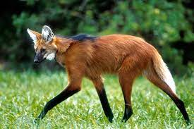

Animais em Extinção
Contact: emanuellybafitis@gmail.com

Lobo-guará (Chrysocyon brachyurus)
O lobo-guará é um animal que se encontra na lista dos animais com risco vulnerável de extinção e tem como habitat os biomas do Cerrado e do Pampa, sendo que neste último a situação é mais grave. A causa mais comum para a redução desta espécie está relacionada ao desmatamento das vegetações.
Estima-se que nos Pampas, atualmente exista uma população média de apenas 50 animais.